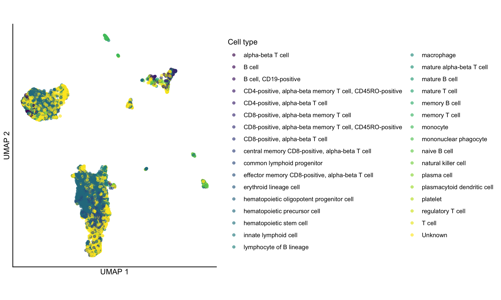

Using the ScPCAr package to access Single-cell Pediatric Cancer Atlas data
Source:vignettes/ScPCAr.Rmd
ScPCAr.RmdIntroduction
The ScPCAr package provides an interface to interact with the Single-cell Pediatric Cancer Atlas (ScPCA) Portal API. This vignette demonstrates the basic workflow for discovering, downloading, and working with ScPCA data.
This vignette covers the following tasks for interacting with the ScPCA Portal:
- Listing available projects
- Selecting a project and exploring its samples
- Obtaining an authentication token
- Downloading all data for an ScPCA project
- Creating a custom dataset with specified samples and data types
- Loading ScPCA data into R
Installing the ScPCAr Package
The ScPCAr package is currently available via GitHub. You can install
the latest version using the pak package:
# Install pak if needed
if (!requireNamespace("pak", quietly = TRUE)) {
install.packages("pak")
}
# Install ScPCAr from GitHub
pak::pak("AlexsLemonade/ScPCAr")You can then load the ScPCAr package. Note that in this
vignette we will use ScPCAr:: when calling functions from
the package, both for clarity and to avoid any possible namespace
conflicts. We will also load the SingleCellExperiment
package for later analysis.
Exploring available projects
Listing all projects
First, let’s see what projects are available in the ScPCA Portal:
# Get a data frame of all projects
projects <- ScPCAr::scpca_projects()
# print out a portion of the data frame
head(projects)## # A tibble: 6 × 23
## scpca_project_id sample_count title pi_name abstract additional_restricti…¹
## <chr> <int> <chr> <chr> <chr> <chr>
## 1 SCPCP000001 23 Single … green_… "Pediat… Research or academic …
## 2 SCPCP000003 59 Single … teache… "Early … Research or academic …
## 3 SCPCP000004 40 Profili… dyer_c… "Pediat… Research or academic …
## 4 SCPCP000005 59 Profili… dyer_c… "Pediat… Research or academic …
## 5 SCPCP000006 45 Single … murphy… "Wilms … Research or academic …
## 6 SCPCP000007 30 Single-… gawad "Bulk g… Research or academic …
## # ℹ abbreviated name: ¹additional_restrictions
## # ℹ 17 more variables: created_at <dttm>, downloadable_sample_count <int>,
## # has_bulk_rna_seq <lgl>, has_cite_seq_data <lgl>,
## # has_multiplexed_data <lgl>, has_single_cell_data <lgl>,
## # has_spatial_data <lgl>, human_readable_pi_name <chr>,
## # includes_anndata <lgl>, includes_cell_lines <lgl>,
## # includes_merged_anndata <lgl>, includes_merged_sce <lgl>, …The scpca_projects() function returns a data frame with
basic project metadata. By default, it returns a simplified version with
list columns removed for easier viewing. You can see the full structure
with additional data such as a list of diagnoses, data types, external
accession numbers, etc., by setting simplify = FALSE:
# Get the full project information including list columns
projects_full <- ScPCAr::scpca_projects(simplify = FALSE)
# View the structure of the full data frame
dplyr::glimpse(projects_full)## Rows: 23
## Columns: 39
## $ scpca_project_id <chr> "SCPCP000001", "SCPCP000003", "SCPCP000004",…
## $ sample_count <int> 23, 59, 40, 59, 45, 30, 104, 39, 26, 11, 10,…
## $ title <chr> "Single cell RNA sequencing of pediatric hig…
## $ pi_name <chr> "green_mulcahy_levy", "teachey_tan", "dyer_c…
## $ abstract <chr> "Pediatric brain tumors are now the most com…
## $ additional_metadata_keys <list> <"development_stage_ontology_term_id", "dis…
## $ additional_restrictions <chr> "Research or academic purposes only", "Resea…
## $ computed_files <list> [<data.frame[5 x 17]>], [<data.frame[5 x 17…
## $ contacts <list> [<data.frame[1 x 2]>], [<data.frame[2 x 2]>…
## $ created_at <dttm> 2026-05-11, 2026-05-11, 2026-05-11, 2026-05…
## $ diagnoses_counts <df[,56]> <data.frame[23 x 56]>
## $ diagnoses <list> <"Anaplastic astrocytoma", "Anaplastic g…
## $ disease_timings <list> <"Recurrence as glioblastoma after multiple…
## $ downloadable_sample_count <int> 23, 59, 40, 59, 43, 30, 104, 38, 26, 11, 10…
## $ external_accessions <list> [<data.frame[4 x 3]>], [<data.frame[1 x 3]>]…
## $ has_bulk_rna_seq <lgl> TRUE, TRUE, FALSE, FALSE, TRUE, FALSE, FALS…
## $ has_cite_seq_data <lgl> FALSE, TRUE, FALSE, FALSE, FALSE, TRUE, TRUE…
## $ has_multiplexed_data <lgl> FALSE, FALSE, FALSE, FALSE, FALSE, FALSE, FA…
## $ has_single_cell_data <lgl> TRUE, TRUE, TRUE, TRUE, TRUE, TRUE, TRUE, TR…
## $ has_spatial_data <lgl> FALSE, FALSE, FALSE, FALSE, TRUE, FALSE, FAL…
## $ human_readable_pi_name <chr> "Green/Mulcahy Levy", "Teachey/Tan", "Dyer/C…
## $ includes_anndata <lgl> TRUE, TRUE, TRUE, TRUE, TRUE, TRUE, TRUE, TR…
## $ includes_cell_lines <lgl> FALSE, FALSE, FALSE, FALSE, FALSE, FALSE, FA…
## $ includes_merged_anndata <lgl> TRUE, TRUE, TRUE, TRUE, TRUE, TRUE, FALSE, F…
## $ includes_merged_sce <lgl> TRUE, TRUE, TRUE, TRUE, TRUE, TRUE, FALSE, F…
## $ includes_xenografts <lgl> FALSE, TRUE, TRUE, TRUE, FALSE, FALSE, FALSE…
## $ metadata_dataset_id <chr> "a6739ab8-ab68-4af5-80c1-57780f22efd4", "11c…
## $ modalities <list> <"SINGLE_CELL", "BULK_RNA_SEQ">, <"SINGLE_CE…
## $ multiplexed_sample_count <int> 0, 0, 0, 0, 0, 0, 0, 34, 0, 0, 0, 0, 0, 0, …
## $ organisms <list> "Homo sapiens", "Homo sapiens", "Homo sapien…
## $ publications <list> [<data.frame[1 x 3]>], [<data.frame[0 x 0]>…
## $ samples <list> <"SCPCS000001", "SCPCS000002", "SCPCS000003…
## $ modality_samples <df[,2]> <data.frame[23 x 2]>
## $ multiplexed_samples <list> <>, <>, <>, <>, <>, <>, <>, <"SCPCS000131",…
## $ seq_units <list> "cell", "cell", <"cell", "nucleus">, <"ce…
## $ summaries <list> [<data.frame[7 x 5]>], [<data.frame[4 x 5]>…
## $ technologies <list> "10xv3", "10xv3", <"10xv2", "10xv3", "10xv3…
## $ unavailable_samples_count <int> 0, 0, 0, 0, 2, 0, 0, 1, 0, 0, 0, 0, 0, 1, 0…
## $ updated_at <dttm> 2026-05-11, 2026-05-11, 2026-05-11, 2026-05…Getting detailed project information
Now let’s get more detailed information about the samples in a
selected project. We will use the first project,
SCPCP000001, as an example. According to the project info
above, these samples are from a study of pediatric high-grade gliomas.
We can get more detailed information about this project using its
project_id.
project_id <- "SCPCP000001"
# Get detailed project metadata
project_info <- ScPCAr::get_project_info(project_id)This returns a list with more detailed information about
the project and the samples within. You can explore the full structure
of this list with str(), but for now we will just look at a
few of the components that might be of interest.
For example, we can look at the set of diagnoses that are present, and their counts:
data.frame(count = unlist(project_info$diagnoses_counts)) |>
tibble::rownames_to_column("diagnosis")## diagnosis count
## 1 Glioblastoma 16
## 2 Non-cancerous 1
## 3 Anaplastic glioma 1
## 4 High-grade glioma 2
## 5 Anaplastic astrocytoma 1
## 6 Diffuse midline glioma 1
## 7 Pleomorphic xanthoastrocytoma 1Similarly, we can look at the data modalities available for this project, which here includes both single-cell and bulk RNA-seq data:
project_info$modalities## [1] "SINGLE_CELL" "BULK_RNA_SEQ"Exploring sample information
Getting sample metadata
Let’s look at the samples within our selected project:
# Get sample information for the project
sample_info <- ScPCAr::get_project_samples(project_id)
head(sample_info)## # A tibble: 6 × 34
## scpca_sample_id scpca_project_id outcome organism submitter_id participant_id
## <chr> <chr> <chr> <chr> <chr> <chr>
## 1 SCPCS000001 SCPCP000001 PFS 11 … Homo sa… 834 834
## 2 SCPCS000002 SCPCP000001 PFS 11 … Homo sa… 1107 1107
## 3 SCPCS000003 SCPCP000001 PFS 7 m… Homo sa… 1115 1115
## 4 SCPCS000004 SCPCP000001 PFS 3 m… Homo sa… 1431 1431
## 5 SCPCS000005 SCPCP000001 PFS 3 m… Homo sa… 1437 1437
## 6 SCPCS000006 SCPCP000001 Stable … Homo sa… 1458 1458
## # ℹ 28 more variables: organism_ontology_id <chr>, sex_ontology_term_id <chr>,
## # tissue_ontology_term_id <chr>, disease_ontology_term_id <chr>,
## # molecular_characteristics <chr>, spinal_leptomeningeal_mets <chr>,
## # development_stage_ontology_term_id <chr>,
## # self_reported_ethnicity_ontology_term_id <chr>, age <dbl>,
## # age_timing <chr>, created_at <dttm>, demux_cell_count_estimate_sum <lgl>,
## # diagnosis <chr>, disease_timing <chr>, has_bulk_rna_seq <lgl>, …Getting detailed sample information
We can also get detailed information for a specific sample:
sample_id <- "SCPCS000001"
# Get detailed sample metadata
sample_detail <- ScPCAr::get_sample_info(sample_id)
str(sample_detail, max.level = 1)## List of 28
## $ additional_metadata :List of 12
## $ age : chr "14"
## $ age_timing : chr "diagnosis"
## $ computed_files :'data.frame': 2 obs. of 17 variables:
## $ created_at : chr "2026-05-11T15:50:13.135237Z"
## $ demux_cell_count_estimate_sum: NULL
## $ diagnosis : chr "Anaplastic glioma"
## $ disease_timing : chr "Initial diagnosis"
## $ has_bulk_rna_seq : logi TRUE
## $ has_cite_seq_data : logi FALSE
## $ has_multiplexed_data : logi FALSE
## $ has_single_cell_data : logi TRUE
## $ has_spatial_data : logi FALSE
## $ includes_anndata : logi TRUE
## $ is_cell_line : logi FALSE
## $ is_xenograft : logi FALSE
## $ modalities : chr [1:2] "SINGLE_CELL" "BULK_RNA_SEQ"
## $ multiplexed_with : list()
## $ project :List of 39
## $ sample_cell_count_estimate : int 3428
## $ scpca_id : chr "SCPCS000001"
## $ seq_units : chr [1:2] "bulk" "cell"
## $ sex : chr "F"
## $ subdiagnosis : chr "NA"
## $ technologies : chr [1:2] "10xv3" "paired_end"
## $ tissue_location : chr "Right thalamus/midbrain"
## $ treatment : chr "Debulking, RT, irinotecan/cetuximab"
## $ updated_at : chr "2026-05-11T15:50:13.135257Z"
# Check which data modalities are available for this sample
sample_detail$modalities## [1] "SINGLE_CELL" "BULK_RNA_SEQ"Authentication
To download full data files, or to create a custom dataset, you must
agree to the terms of service and obtain an authentication token. To
view the terms of service in a web browser, run
ScPCAr::view_terms(). Then you can use the
ScPCAr::get_auth() function, providing your email address
and agreeing to the terms of service:
# Get an authentication token
# Replace with your actual email address
my_email <- "your.email@example.com"
auth_token <- ScPCAr::get_auth(email = my_email, agree = TRUE)In addition to saving your authorization token to
auth_token (or whatever variable name you set), the
ScPCAr::get_auth() function will store the token in the
environment variable SCPCA_AUTH_TOKEN so it can be accessed
by other ScPCAr functions automatically. If you have a
saved token from a previous session, you can populate the environment
with a command like:
Sys.setenv("SCPCA_AUTH_TOKEN" = auth_token) or by setting
the environment variable in your shell before launching
R.
Important Notes:
- You must set
agree = TRUEto indicate you accept the terms of service - Replace
"your.email@example.com"with your actual email address - Keep your token secure and don’t share it publicly
- If you create a custom dataset using
ScPCAr::create_dataset(), you will need to use the same token to access that dataset in future R sessions, so be sure to save it somewhere safe (e.g., a password manager).- To use your saved token the token in the future, use
Sys.setenv(SCPCA_AUTH_TOKEN = saved_token).
- To use your saved token the token in the future, use
Downloading data for an ScPCA project
There are two main patterns for downloading data from the ScPCA
Portal using ScPCAr: downloading pre-defined projects or
constructing custom data sets.
- Project downloads contain all available samples for a given project
- Custom datasets allow you to specify specific sets of samples, including samples from different projects
We will start with project downloads first, as they are a bit simpler, though less flexible.
Downloading a project in SingleCellExperiment format
We will use the download_project() function, specifying
the project ID, desired destination directory, and the file format. We
also have the option to download a merged object with all samples
contained in a single object instead of as individual objects. The
function will download and unpack the files associated with that sample,
and return a list of file paths for the downloaded files.
Let’s start with SingleCellExperiment format:
# Download SingleCellExperiment data for our project
# This will create a directory structure under "scpca_data/"
file_paths <- ScPCAr::download_project(
project_id,
destination = "scpca_data",
format = "sce"
)
# List some of the files that were downloaded
head(file_paths)## [1] "scpca_data/SCPCP000001_single-cell-experiment_2026-07-01/README.md"
## [2] "scpca_data/SCPCP000001_single-cell-experiment_2026-07-01/SCPCP000001_single-cell/single-cell_metadata.tsv"
## [3] "scpca_data/SCPCP000001_single-cell-experiment_2026-07-01/SCPCP000001_single-cell/SCPCS000001/SCPCL000001_celltype-report.html"
## [4] "scpca_data/SCPCP000001_single-cell-experiment_2026-07-01/SCPCP000001_single-cell/SCPCS000001/SCPCL000001_filtered.rds"
## [5] "scpca_data/SCPCP000001_single-cell-experiment_2026-07-01/SCPCP000001_single-cell/SCPCS000001/SCPCL000001_processed.rds"
## [6] "scpca_data/SCPCP000001_single-cell-experiment_2026-07-01/SCPCP000001_single-cell/SCPCS000001/SCPCL000001_qc.html"Project download file structure
A standard download of SingleCellExperiment data for a project will create a directory structure like this:
scpca_data
└── {project_id}_single-cell-experiment_{YYYY-MM-DD}
├── README.md
├── {project_id}_bulk
│ ├── {project_id}_bulk_metadata.tsv
│ └── {project_id}_bulk_quant.tsv
└── {project_id}_single-cell
├── {sample1_id}
│ ├── {library1_id}_celltype-report.html
│ ├── {library1_id}_filtered.rds
│ ├── {library1_id}_processed.rds
│ ├── {library1_id}_qc.html
│ └── {library1_id}_unfiltered.rds
├── {sample2_id}
...
Note that the library_id and sample_id
often have different numbers, as a single sample may have been sequenced
across multiple libraries. For details about the contents of these
files, see the ScPCA
Portal documentation.
Downloading a project in AnnData/H5AD format
ScPCAr also supports downloading data in AnnData (H5AD)
format, which is commonly used in Python-based single-cell analysis
workflows:
# Download the same project in H5AD format
file_paths_h5ad <- ScPCAr::download_project(
project_id,
destination = "scpca_data",
format = "anndata"
)For more about the expected files when downloading samples in this format, see the ScPCA Portal AnnData docs.
Custom ScPCA datasets
The ScPCAr package supports the creation of custom datasets that
allow you to choose specific samples for download, including samples
from multiple projects. After exploring the metadata with functions like
get_project_info(), get_project_samples() and
get_sample_info(), you may have a list of samples that you
would like to download.
Creating a custom dataset
To create a custom dataset, use the create_dataset()
function. This will return a dataset ID that you will want to keep track
of for later access to the dataset. Note that the dataset is also tied
to the authentication token, so you will need to use the same token to
access the dataset later. Make sure you have the token saved
somewhere safe! See Authentication for details.
create_dataset() takes a vector of samples and/or a
vector of projects (specified with the projects argument),
and will return a dataset ID that you can use later to add or removed
samples and projects, as well as to initiate dataset processing and
download. Here we will make a small example dataset with two B-ALL
samples from two different projects, SCPCS000212 and
SCPCS000652, which are from projects SCPCP000008
and SCPCS000022,
respectively.
my_dataset <- create_dataset(samples = c("SCPCS000212", "SCPCS000652"))## ScPCA dataset 96a5478a-32b4-4707-9ee8-295a174f5741 created.By default, single-cell data will be formatted as
SingleCellExperiment objects, but you can also specify
format = "anndata" to create a dataset with AnnData objects
instead. Once a dataset is created, you can not change the format.
You must use create_dataset() to create a new dataset with
a different format.
Other options include whether or not to include bulk RNA-seq data;
the default is no bulk data, but you can include bulk data with
include_bulk = "TRUE". Note that the bulk data will be
included for all available samples in each project that the selected
samples come from, not just the specified samples.
You can also specify an email address that will be used for notification when the dataset has completed processed. For more details on processing, see below.
Modifying a custom dataset
To add samples or projects to a custom dataset, use the
add_dataset_samples() function; to remove samples or
projects, use the remove_dataset_samples() function. You
can also fully replace the contents of dataset with a new set of samples
and/or projects using the replace_dataset_data() function.
(This may be convenient as it will not generate a new dataset ID, while
rerunning create_dataset() would.)
Each of these functions will be available until a dataset is submitted for processing. After dataset processing begins, you will not be able to modify the dataset contents, and you will need to create a new dataset if you want to change the samples or projects.
Viewing the contents of a custom dataset
To view the current contents of a dataset, use the
get_dataset_info() function, which will return a list with
the dataset ID ($id), a table of samples
($sample_info), and other metadata including the chosen
dataset format, processing status, etc.
get_dataset_info(my_dataset)## $id
## [1] "96a5478a-32b4-4707-9ee8-295a174f5741"
##
## $format
## [1] "SINGLE_CELL_EXPERIMENT"
##
## $status
## [1] "pending"
##
## $n_samples
## [1] 2
##
## $n_projects
## [1] 2
##
## $sample_info
## # A tibble: 2 × 7
## scpca_sample_id scpca_project_id seq_unit has_spatial has_bulk has_cite_seq
## <chr> <chr> <chr> <lgl> <lgl> <lgl>
## 1 SCPCS000212 SCPCP000008 cell FALSE FALSE FALSE
## 2 SCPCS000652 SCPCP000022 cell FALSE FALSE FALSE
## # ℹ 1 more variable: has_multiplexed <lgl>
##
## $merged_projects
## character(0)Processing and downloading a custom dataset
Once you are satisfied with the contents of your custom dataset,
submit it for processing using the
start_dataset_processing() function:
start_dataset_processing(my_dataset)## ScPCA dataset 96a5478a-32b4-4707-9ee8-295a174f5741 processing started.The amount of time that a dataset takes to process varies by the
number of samples included. For a small dataset like this, it should
take only a few minutes. To check progress, run the
get_dataset_status() function:
get_dataset_status(my_dataset)## [1] "processing"You can run this repeatedly until the sample status changes to
“succeeded”, at which point the dataset is ready for download, and can
be downloaded with the download_dataset function. As with
the download_project() function, you can specify a
destination. The function will also (silently) return a list of file
paths for the downloaded files.
If the dataset is not done processing, this will result in an error:
my_dataset_files <- download_dataset(
my_dataset,
destination = "scpca_data"
)## Error:
## ! ScPCA dataset `96a5478a-32b4-4707-9ee8-295a174f5741` is not ready for download (status: processing). Use `get_dataset_status("96a5478a-32b4-4707-9ee8-295a174f5741")` to monitor progress. Alternatively, rerun `download_dataset() with `await_processing = TRUE` to wait for processing and download when complete.If you are willing to wait for the processing to complete before
performing any other work in your session (or you are using a
multithreading package like future), you can use the
download_dataset() function with
await_processing = TRUE. This option will also make sure
that the dataset has been submitted for processing, if you did not
previously run start_dataset_processing().
my_dataset_files <- download_dataset(
my_dataset,
destination = "scpca_data",
await_processing = TRUE
)## ℹ Waiting for dataset 96a5478a-32b4-4707-9ee8-295a174f5741 to finish processing...## Downloading 96a5478a-32b4-4707-9ee8-295a174f5741_single-cell-experiment_2026-07-01.zip...## Unzipping to scpca_data/96a5478a-32b4-4707-9ee8-295a174f5741_single-cell-experiment_2026-07-01...Custom dataset download file structure
The downloaded files will be placed in a directory named with the
dataset id, format, and download date. Each project will be in a
subdirectory, with each sample directory nested within that. Note that
in this example, there were two separate libraries for the
SCPCS000652 sample, so there are two sets of files for that
sample.
scpca_data
└── {dataset_id}_single-cell-experiment_{YYYY-MM-DD}
├── README.md
├── SCPCP000008_single-cell
│ ├── SCPCS000212
│ │ ├── SCPCL000286_celltype-report.html
│ │ ├── SCPCL000286_filtered.rds
│ │ ├── SCPCL000286_processed.rds
│ │ ├── SCPCL000286_qc.html
│ │ └── SCPCL000286_unfiltered.rds
│ └── single-cell_metadata.tsv
└── SCPCP000022_single-cell
├── SCPCS000652
│ ├── SCPCL000980_celltype-report.html
│ ├── SCPCL000980_filtered.rds
│ ├── SCPCL000980_processed.rds
│ ├── SCPCL000980_qc.html
│ ├── SCPCL000980_unfiltered.rds
│ ├── SCPCL000981_celltype-report.html
│ ├── SCPCL000981_filtered.rds
│ ├── SCPCL000981_processed.rds
│ ├── SCPCL000981_qc.html
│ └── SCPCL000981_unfiltered.rds
└── single-cell_metadata.tsvIf bulk RNA-seq data were included, it would be found in a separate
{project_id}_bulk directory as a single TSV file with all
bulk samples for that project, along with a metadata file describing the
RNA-seq samples, just as with the project downloads above.
Working with ScPCA data in R
Loading data into R
# select the processed SCE files using a pattern match for the file name.
processed_sce_files <- stringr::str_subset(my_dataset_files, "_processed\\.rds$")
# Load the first SingleCellExperiment object
sce <- readRDS(processed_sce_files[1])
# View a summary of the object
sce## class: SingleCellExperiment
## dim: 60319 10896
## metadata(50): library_id sample_id ... infercnv_options infercnv_table
## assays(3): counts spliced logcounts
## rownames(60319): ENSG00000223972 ENSG00000243485 ... ENSG00000273496
## ENSG00000274175
## rowData names(4): gene_ids gene_symbol mean detected
## colnames(10896): GAGTCCGTCATCTGCC ACTTGTTAGATTACCC ... AGCGTCGTCACTTCAT
## AGCGTCGGTGTCGCTG
## colData names(27): barcodes sum ... is_infercnv_reference
## infercnv_total_cnv
## reducedDimNames(2): PCA UMAP
## mainExpName: NULL
## altExpNames(0):Working with the SingleCellExperiment object
Once loaded, you can work with the SingleCellExperiment object using standard Bioconductor tools. For more information on the contents of the SingleCellExperiment objects provided by ScPCA, see the ScPCA Portal documentation.
# Access library metadata
library_metadata <- metadata(sce)
library_metadata$sample_id## [1] "SCPCS000212"## [1] 60319 10896
# Access cell metadata
cell_metadata <- colData(sce)
cell_metadata## DataFrame with 10896 rows and 27 columns
## barcodes sum detected subsets_mito_sum
## <character> <numeric> <integer> <numeric>
## GAGTCCGTCATCTGCC GAGTCCGTCATCTGCC 17909 4337 748
## ACTTGTTAGATTACCC ACTTGTTAGATTACCC 17926 4600 1323
## CGGGTCACATTTCACT CGGGTCACATTTCACT 17633 4683 1151
## TCGGTAAAGGTAAACT TCGGTAAAGGTAAACT 18701 4644 843
## CATCAAGCAATGGACG CATCAAGCAATGGACG 17877 4249 1391
## ... ... ... ... ...
## CGTGTCTAGACTCGGA CGTGTCTAGACTCGGA 530 326 0
## TAAGCGTGTAGCGCTC TAAGCGTGTAGCGCTC 677 506 48
## AAGGAGCGTCCGTGAC AAGGAGCGTCCGTGAC 563 426 48
## AGCGTCGTCACTTCAT AGCGTCGTCACTTCAT 618 468 55
## AGCGTCGGTGTCGCTG AGCGTCGGTGTCGCTG 588 403 18
## subsets_mito_detected subsets_mito_percent total
## <integer> <numeric> <numeric>
## GAGTCCGTCATCTGCC 15 4.17667 17909
## ACTTGTTAGATTACCC 15 7.38034 17926
## CGGGTCACATTTCACT 15 6.52753 17633
## TCGGTAAAGGTAAACT 15 4.50778 18701
## CATCAAGCAATGGACG 15 7.78095 17877
## ... ... ... ...
## CGTGTCTAGACTCGGA 0 0.00000 530
## TAAGCGTGTAGCGCTC 8 7.09010 677
## AAGGAGCGTCCGTGAC 11 8.52575 563
## AGCGTCGTCACTTCAT 9 8.89968 618
## AGCGTCGGTGTCGCTG 9 3.06122 588
## submitter_celltype_annotation prob_compromised miQC_pass
## <character> <numeric> <logical>
## GAGTCCGTCATCTGCC Blast 0.0488088 TRUE
## ACTTGTTAGATTACCC Blast 0.0372205 TRUE
## CGGGTCACATTTCACT Blast 0.0326920 TRUE
## TCGGTAAAGGTAAACT Submitter-excluded 0.0379681 TRUE
## CATCAAGCAATGGACG Submitter-excluded 0.0490178 TRUE
## ... ... ... ...
## CGTGTCTAGACTCGGA Submitter-excluded 0.01716392 TRUE
## TAAGCGTGTAGCGCTC Submitter-excluded 0.00504378 TRUE
## AAGGAGCGTCCGTGAC Submitter-excluded 0.00587643 TRUE
## AGCGTCGTCACTTCAT Submitter-excluded 0.00705462 TRUE
## AGCGTCGGTGTCGCTG Submitter-excluded 0.00552258 TRUE
## scDblFinder_class scDblFinder_score scpca_filter sizeFactor
## <character> <numeric> <character> <numeric>
## GAGTCCGTCATCTGCC singlet 0.00681668 Keep 2.21256
## ACTTGTTAGATTACCC singlet 0.25937265 Keep 2.43972
## CGGGTCACATTTCACT doublet 0.99895501 Keep 2.67749
## TCGGTAAAGGTAAACT singlet 0.00033179 Keep 2.48906
## CATCAAGCAATGGACG singlet 0.00219237 Keep 2.35295
## ... ... ... ... ...
## CGTGTCTAGACTCGGA singlet 3.95320e-06 Keep 0.0591874
## TAAGCGTGTAGCGCTC singlet 1.71664e-05 Keep 0.1368456
## AAGGAGCGTCCGTGAC singlet 7.34893e-05 Keep 0.1082099
## AGCGTCGTCACTTCAT singlet 7.47303e-04 Keep 0.1097550
## AGCGTCGGTGTCGCTG singlet 2.22391e-06 Keep 0.0889758
## cluster singler_celltype_ontology singler_celltype_annotation
## <factor> <character> <character>
## GAGTCCGTCATCTGCC 1 CL:0000557 granulocyte monocyte..
## ACTTGTTAGATTACCC 2 CL:0000051 common lymphoid prog..
## CGGGTCACATTTCACT 2 CL:0000051 common lymphoid prog..
## TCGGTAAAGGTAAACT 1 CL:0000051 common lymphoid prog..
## CATCAAGCAATGGACG 2 CL:0000051 common lymphoid prog..
## ... ... ... ...
## CGTGTCTAGACTCGGA 12 CL:0000051 common lymphoid prog..
## TAAGCGTGTAGCGCTC 7 CL:0000051 common lymphoid prog..
## AAGGAGCGTCCGTGAC 11 CL:0000786 plasma cell
## AGCGTCGTCACTTCAT 7 CL:0000051 common lymphoid prog..
## AGCGTCGGTGTCGCTG 12 CL:0000051 common lymphoid prog..
## cellassign_celltype_annotation cellassign_celltype_ontology
## <character> <character>
## GAGTCCGTCATCTGCC Gamma delta T cells CL:0000798
## ACTTGTTAGATTACCC other NA
## CGGGTCACATTTCACT other NA
## TCGGTAAAGGTAAACT Gamma delta T cells CL:0000798
## CATCAAGCAATGGACG other NA
## ... ... ...
## CGTGTCTAGACTCGGA other NA
## TAAGCGTGTAGCGCTC other NA
## AAGGAGCGTCCGTGAC other NA
## AGCGTCGTCACTTCAT other NA
## AGCGTCGGTGTCGCTG other NA
## cellassign_max_prediction scimilarity_celltype_annotation
## <numeric> <character>
## GAGTCCGTCATCTGCC 1.000000 hematopoietic precur..
## ACTTGTTAGATTACCC 0.999935 common lymphoid prog..
## CGGGTCACATTTCACT 0.999965 pro-B cell
## TCGGTAAAGGTAAACT 1.000000 B cell
## CATCAAGCAATGGACG 0.999947 naive B cell
## ... ... ...
## CGTGTCTAGACTCGGA 0.997257 hematopoietic stem c..
## TAAGCGTGTAGCGCTC 0.983192 B cell
## AAGGAGCGTCCGTGAC 0.995834 memory B cell
## AGCGTCGTCACTTCAT 0.954450 pro-B cell
## AGCGTCGGTGTCGCTG 0.997411 germinal center B cell
## scimilarity_celltype_ontology scimilarity_min_distance
## <character> <numeric>
## GAGTCCGTCATCTGCC CL:0008001 0.0286341
## ACTTGTTAGATTACCC CL:0000051 0.0563750
## CGGGTCACATTTCACT CL:0000826 0.0149082
## TCGGTAAAGGTAAACT CL:0000236 0.0327936
## CATCAAGCAATGGACG CL:0000788 0.0448575
## ... ... ...
## CGTGTCTAGACTCGGA CL:0000037 0.0474519
## TAAGCGTGTAGCGCTC CL:0000236 0.0192931
## AAGGAGCGTCCGTGAC CL:0000787 0.0152029
## AGCGTCGTCACTTCAT CL:0000826 0.0280654
## AGCGTCGGTGTCGCTG CL:0000844 0.0312555
## consensus_celltype_annotation consensus_celltype_ontology
## <character> <character>
## GAGTCCGTCATCTGCC hematopoietic precur.. CL:0008001
## ACTTGTTAGATTACCC common lymphoid prog.. CL:0000051
## CGGGTCACATTTCACT hematopoietic precur.. CL:0008001
## TCGGTAAAGGTAAACT Unknown NA
## CATCAAGCAATGGACG Unknown NA
## ... ... ...
## CGTGTCTAGACTCGGA hematopoietic precur.. CL:0008001
## TAAGCGTGTAGCGCTC Unknown NA
## AAGGAGCGTCCGTGAC lymphocyte of B line.. CL:0000945
## AGCGTCGTCACTTCAT hematopoietic precur.. CL:0008001
## AGCGTCGGTGTCGCTG Unknown NA
## is_infercnv_reference infercnv_total_cnv
## <logical> <integer>
## GAGTCCGTCATCTGCC FALSE 15
## ACTTGTTAGATTACCC FALSE 10
## CGGGTCACATTTCACT FALSE 10
## TCGGTAAAGGTAAACT FALSE 7
## CATCAAGCAATGGACG FALSE 15
## ... ... ...
## CGTGTCTAGACTCGGA FALSE 8
## TAAGCGTGTAGCGCTC FALSE 22
## AAGGAGCGTCCGTGAC FALSE 18
## AGCGTCGTCACTTCAT FALSE 11
## AGCGTCGGTGTCGCTG FALSE 3
# Access gene metadata
gene_metadata <- rowData(sce)
gene_metadata## DataFrame with 60319 rows and 4 columns
## gene_ids gene_symbol mean detected
## <character> <character> <numeric> <numeric>
## ENSG00000223972 ENSG00000223972 DDX11L1 0 0
## ENSG00000243485 ENSG00000243485 MIR1302-2HG 0 0
## ENSG00000284332 ENSG00000284332 MIR1302-2 0 0
## ENSG00000268020 ENSG00000268020 OR4G4P 0 0
## ENSG00000240361 ENSG00000240361 OR4G11P 0 0
## ... ... ... ... ...
## ENSG00000225491 ENSG00000225491 UBE2Q2P4Y 0.00000e+00 0.00000000
## ENSG00000185894 ENSG00000185894 BPY2C 0.00000e+00 0.00000000
## ENSG00000228296 ENSG00000228296 TTTY4C 0.00000e+00 0.00000000
## ENSG00000273496 ENSG00000273496 NA 9.17768e-05 0.00917768
## ENSG00000274175 ENSG00000274175 NA 0.00000e+00 0.00000000And of course we can make some standard plots. Here a UMAP colored by the consensus cell type annotation. (This one has a few too many cell types to be easily distinguishable, but we’ll do it anyway for demonstration purposes only!)
# View the UMAP, colored by consensus cell type
scater::plotUMAP(sce, color_by = "consensus_celltype_annotation") +
ggplot2::coord_fixed() +
ggplot2::theme_classic() +
ggplot2::guides(color = ggplot2::guide_legend(title = "Cell type")) +
# remove axis ticks
ggplot2::theme(
axis.ticks = ggplot2::element_blank(),
axis.text = ggplot2::element_blank()
)
Session info
Click to expand R session info
sessioninfo::session_info()## ─ Session info ──────────────────────────────────────────────────────────────────────────────────────────────────────────────────────
## setting value
## version R version 4.5.3 (2026-03-11)
## os macOS Tahoe 26.5.1
## system aarch64, darwin20
## ui X11
## language (EN)
## collate en_US.UTF-8
## ctype en_US.UTF-8
## tz America/New_York
## date 2026-07-01
## pandoc 3.9.0.2 @ /Users/josh/.pixi/bin/pandoc
## quarto 1.8.27 @ /Users/josh/.pixi/bin/quarto
##
## ─ Packages ──────────────────────────────────────────────────────────────────────────────────────────────────────────────────────────
## ! package * version date (UTC) lib source
## abind 1.4-8 2024-09-12 [1] CRAN (R 4.5.0)
## beachmat 2.26.0 2025-10-29 [1] https://b~
## beeswarm 0.4.0 2021-06-01 [1] CRAN (R 4.5.0)
## Biobase * 2.70.0 2025-10-29 [1] https://b~
## BiocGenerics * 0.56.0 2025-10-29 [1] https://b~
## BiocNeighbors 2.4.0 2025-10-29 [1] https://b~
## BiocParallel 1.44.0 2025-10-29 [1] Bioconduc~
## BiocSingular 1.26.1 2025-11-17 [1] https://b~
## brio 1.1.5 2024-04-24 [1] CRAN (R 4.5.0)
## cachem 1.1.0 2024-05-16 [1] CRAN (R 4.5.0)
## cli 3.6.6 2026-04-09 [1] CRAN (R 4.5.2)
## codetools 0.2-20 2024-03-31 [2] CRAN (R 4.5.3)
## cowplot 1.1.3 2024-01-22 [1] CRAN (R 4.5.0)
## curl 7.1.0 2026-04-22 [1] CRAN (R 4.5.2)
## DelayedArray 0.36.1 2026-03-31 [1] https://b~
## desc 1.4.3 2023-12-10 [1] CRAN (R 4.5.0)
## devtools 2.5.2 2026-04-30 [1] CRAN (R 4.5.2)
## dplyr 1.2.1 2026-04-03 [1] CRAN (R 4.5.2)
## ellipsis 0.3.3 2026-04-04 [1] CRAN (R 4.5.2)
## evaluate 1.0.5 2025-08-27 [1] CRAN (R 4.5.0)
## farver 2.1.2 2024-05-13 [1] CRAN (R 4.5.0)
## fastmap 1.2.0 2024-05-15 [1] CRAN (R 4.5.0)
## fs 2.1.0 2026-04-18 [1] CRAN (R 4.5.2)
## generics * 0.1.4 2025-05-09 [1] CRAN (R 4.5.0)
## GenomicRanges * 1.62.1 2025-12-08 [1] https://b~
## ggbeeswarm 0.7.3 2025-11-29 [1] CRAN (R 4.5.2)
## ggplot2 4.0.3 2026-04-22 [1] CRAN (R 4.5.2)
## ggrepel 0.9.8 2026-03-17 [1] CRAN (R 4.5.2)
## glue 1.8.1 2026-04-17 [1] CRAN (R 4.5.2)
## gridExtra 2.3 2017-09-09 [1] CRAN (R 4.5.0)
## gtable 0.3.6 2024-10-25 [1] CRAN (R 4.5.0)
## here 1.0.2 2025-09-15 [1] CRAN (R 4.5.0)
## hms 1.1.4 2025-10-17 [1] CRAN (R 4.5.0)
## httr2 1.2.2 2025-12-08 [1] CRAN (R 4.5.2)
## IRanges * 2.44.0 2025-10-29 [1] https://b~
## irlba 2.3.7 2026-01-30 [1] CRAN (R 4.5.2)
## jsonlite 2.0.0 2025-03-27 [1] CRAN (R 4.5.0)
## knitr 1.51 2025-12-20 [1] CRAN (R 4.5.2)
## labeling 0.4.3 2023-08-29 [1] CRAN (R 4.5.0)
## lattice 0.22-9 2026-02-09 [2] CRAN (R 4.5.3)
## lifecycle 1.0.5 2026-01-08 [1] CRAN (R 4.5.2)
## magrittr 2.0.5 2026-04-04 [1] CRAN (R 4.5.2)
## Matrix 1.7-5 2026-03-21 [1] CRAN (R 4.5.2)
## MatrixGenerics * 1.22.0 2025-10-29 [1] https://b~
## matrixStats * 1.5.0 2025-01-07 [1] CRAN (R 4.5.0)
## memoise 2.0.1 2021-11-26 [1] CRAN (R 4.5.0)
## otel 0.2.0 2025-08-29 [1] CRAN (R 4.5.0)
## pillar 1.11.1 2025-09-17 [1] CRAN (R 4.5.0)
## pkgbuild 1.4.8 2025-05-26 [1] CRAN (R 4.5.0)
## pkgconfig 2.0.3 2019-09-22 [1] CRAN (R 4.5.0)
## pkgload 1.5.2 2026-04-22 [1] CRAN (R 4.5.2)
## purrr 1.2.2 2026-04-10 [1] CRAN (R 4.5.2)
## R6 2.6.1 2025-02-15 [1] CRAN (R 4.5.0)
## rappdirs 0.3.4 2026-01-17 [1] CRAN (R 4.5.2)
## RColorBrewer 1.1-3 2022-04-03 [1] CRAN (R 4.5.0)
## Rcpp 1.1.1-1.1 2026-04-24 [1] CRAN (R 4.5.2)
## readr 2.2.0 2026-02-19 [1] CRAN (R 4.5.2)
## rlang 1.2.0 2026-04-06 [1] CRAN (R 4.5.2)
## rprojroot 2.1.1 2025-08-26 [1] CRAN (R 4.5.0)
## rstudioapi 0.18.0 2026-01-16 [1] CRAN (R 4.5.2)
## rsvd 1.0.5 2021-04-16 [1] CRAN (R 4.5.0)
## S4Arrays 1.10.1 2025-12-01 [1] https://b~
## S4Vectors * 0.48.1 2026-04-04 [1] https://b~
## S7 0.2.2 2026-04-22 [1] CRAN (R 4.5.2)
## ScaledMatrix 1.18.0 2025-10-29 [1] https://b~
## scales 1.4.0 2025-04-24 [1] CRAN (R 4.5.0)
## scater 1.38.1 2026-03-20 [1] Bioconduc~
## P ScPCAr * 0.2.0 2026-06-29 [?] load_all()
## scuttle 1.20.0 2025-10-29 [1] https://b~
## Seqinfo * 1.0.0 2025-10-29 [1] https://b~
## sessioninfo 1.2.4 2026-06-04 [1] CRAN (R 4.5.3)
## SingleCellExperiment * 1.32.0 2025-10-29 [1] https://b~
## SparseArray 1.10.10 2026-03-30 [1] https://b~
## stringi 1.8.7 2025-03-27 [1] CRAN (R 4.5.0)
## stringr 1.6.0 2025-11-04 [1] CRAN (R 4.5.0)
## SummarizedExperiment * 1.40.0 2025-10-29 [1] https://b~
## testthat * 3.3.2 2026-01-11 [1] CRAN (R 4.5.2)
## tibble 3.3.1 2026-01-11 [1] CRAN (R 4.5.2)
## tidyr 1.3.2 2025-12-19 [1] CRAN (R 4.5.2)
## tidyselect 1.2.1 2024-03-11 [1] CRAN (R 4.5.0)
## tzdb 0.5.0 2025-03-15 [1] CRAN (R 4.5.0)
## usethis 3.2.1 2025-09-06 [1] CRAN (R 4.5.0)
## utf8 1.2.6 2025-06-08 [1] CRAN (R 4.5.0)
## vctrs 0.7.3 2026-04-11 [1] CRAN (R 4.5.2)
## vipor 0.4.7 2023-12-18 [1] CRAN (R 4.5.0)
## viridis 0.6.5 2024-01-29 [1] CRAN (R 4.5.0)
## viridisLite 0.4.3 2026-02-04 [1] CRAN (R 4.5.2)
## withr 3.0.2 2024-10-28 [1] CRAN (R 4.5.0)
## xfun 0.58 2026-06-01 [1] CRAN (R 4.5.2)
## XVector 0.50.0 2025-10-29 [1] https://b~
## yaml 2.3.12 2025-12-10 [1] CRAN (R 4.5.2)
##
## [1] /Users/josh/Library/R/arm64/4.5/library
## [2] /Library/Frameworks/R.framework/Versions/4.5-arm64/Resources/library
##
## * ── Packages attached to the search path.
## P ── Loaded and on-disk path mismatch.
##
## ─────────────────────────────────────────────────────────────────────────────────────────────────────────────────────────────────────